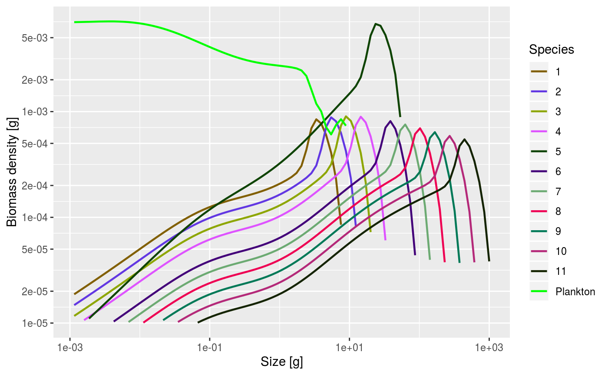

Building a new multispecies model, part 2
Gustav Delius
Edit this page. Source:vignettes/build_model_2.Rmd
build_model_2.RmdSo far we have looked at a trait-based models where all species are identical except for their asymptotic size. Here is an example.
## Note: Using f0, h, lambda, kappa and the predation kernel to calculate gamma.## Steady state was reached before 15 years.
Let us now see what happens if we change some parameters for an individual species.
Let us pick on species 5 and increase its maximum intake rate, so that it grows faster. Let us keep the allometric form for the maximum intake rate \[h_i(w) = h_i\, w^n\] and only change the coefficient \(h_5\) for species 5. The coefficients \(h_i\), being species-specific numbers, are stored in the species_params data frame. Its current value for species 5 is
## [1] 70Let’s change that to \(h_5=100\) but also keep a version of the old params object around for later comparison.
This has changed the coefficient \(h_5\), but it has not yet changed the maximum intake rate \(h_5(w)\) that is stored in the params object. We need to instruct mizer to recalculate the size-dependent rate \(h_5(w)\) using the information from the species_params data frame.
Now the maximum intake rate has changed. As a consequence the steady-state will have changed. Let’s calculate the new steady state.
## Steady state was reached before 15 years.Let’s have a look at it.

The size distribution for species 5 has changed considerably, due to its higher growth rate. There is also a change in the size distributions of the other species, due to the increased predation from species 5.
One thing that has not changed much is the number of small individuals. This may surprise you. Given that there is so much more spawning stock biomass for species 5, shouldn’t there be many more eggs? Yes, and as a consequence species 5 would have led to the competitive exclusion of other, less fast-growing species. We however wanted a coexistence steady state. Therefore the steady() function keeps the reproduction of all species at a constant level. This means changing thee reproductive efficiency of the species. Indeed if we look at the values of the reproductive efficiencies we see that it is much lower for species 5 now:
## [1] 0.37564467 0.36254167 0.36375888 0.37658946 0.04560271 0.42079510
## [7] 0.44474190 0.46554758 0.48118562 0.49076911 0.49477028Compare that to the reproductive efficiencies of the old params object by looking at the ratio of old to new:
## [1] 0.5932864 0.6151316 0.6134716 0.5929846 4.9010279 0.5317902 0.5042382
## [8] 0.4836590 0.4714631 0.4683195 0.4743927In order to retain the egg abundances at the previous level, not only did we have to drastically reduce the reproductive efficiency for species 5 by a factor of about 1/5, but we also had to roughly double the efficiencies of the other species (to compensate for their increased predation mortality).
In fact, we notice that it is not actually viable to maintain the larger species at this level, because they would need reproductive efficiencies greater than 1, which of course is nonsensical. To get a viable system with a fast-growing species 5, we would need to reduce the abundance of that species.
We can use the function rescaleAbundance() to rescale the abundance of species 5 by a factor of 4 and then again run the system to steady state.
## Steady state was reached before 22.5 years. Let’s check that this is viable, in the sense that it does not demand any species to have a reproductive efficiency greater than 1.
Let’s check that this is viable, in the sense that it does not demand any species to have a reproductive efficiency greater than 1.
## [1] 0.23894741 0.23746176 0.23815922 0.24079435 0.02983897 0.24934856
## [7] 0.25422868 0.25921787 0.26449127 0.27045086 0.27763165We have now seen how to change a parameter of the model and to investigate the new steady states that this leads to. There are of course many other parameters you can change besides the maximum intake rate. You get a list of everything that can be specified in the model if you look at the help page of setParams() at https://sizespectrum.org/mizer/dev/reference/setParams.html You will see there that you can also specify arbitrary size-dependence of most rates, rather than using the allometric rates.
Over to you. Experiment a bit with changing some model parameters and the resulting steady states. For example you could see if you can find species parameters where one species keeps an increasing biomass density all the way to its maximum size. Or parameters where a species stops growing before it reaches maximum size. Or parameters where the biomass density for juveniles is decreasing rather than increasing.